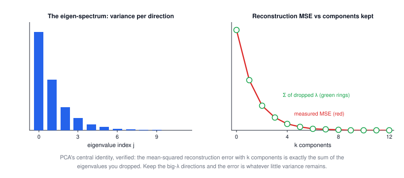
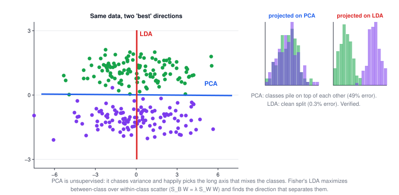
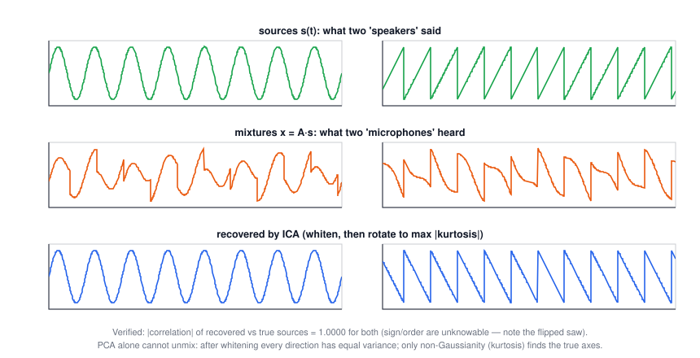

Lecture 8: Subspace Methods
CSE 276C, Lecture 8 · Prof. Henrik Christensen · Leonardis & Bischof, "Robust recognition using eigenimages", CVIU 2000. All numbers verified in
scripts/lec8/verify.py.The big picture
This lecture is Lecture 2's eigen-decomposition finally paying off at scale. Every method here is "pick the eigenvectors of the right matrix":
reconstruct best → PCA (eigs of the covariance) · separate classes → LDA (eigs of \(S_W^{-1}S_B\)) · correlate two views → CCA (SVD of whitened cross-covariance) · independent causes → ICA (beyond 2nd order)
| robotics problem | what you have | what you need | method |
|---|---|---|---|
| recognize objects / faces | training images of each thing | compact, comparable descriptors | PCA (eigenimages), LDA for the decision |
| pose estimation from appearance | views on a known turntable path | angle of a new view | PCA manifold + nearest point; CCA |
| mobile robot localization | panoramas along a route | "where does this view sit?" | eigenspace matching |
| unmix overlapping signals | sensor mixtures only | the underlying sources | ICA |
1 · Why: recognition in clutter
"Where's the can of Coke? Is the stove off?" A fridge shelf is clutter: segmentation is hard, pose and expression vary, illumination changes everything (the slides show one face under 21 lightings), and context fools even humans — the upside-down Thatcher face looks fine until you rotate it. The slides' answer: skip hand-built geometric models (generalized cylinders, CAD) and learn appearance directly from images — shape, reflectance, pose, and illumination all baked into training views, with well-defined error characteristics.
2 · The subspace idea
Stack an image's pixels into a vector: a 128×128 image is a point in \(\mathbb{R}^{16384}\). Random points in that space are static noise — real images of your objects occupy a tiny manifold. So approximate every training image as a mix of a few basis images:
$$x_i \approx \tilde x_i = \sum_{j=0}^{k} q_j(x_i)\,u_j, \qquad U = [u_0 \dots u_k],\; k \ll n$$| symbol | meaning |
|---|---|
| \(x_i\) | one (normalized, zero-mean) training image as a long vector |
| \(u_j\) | basis images ("eigenimages") — same size as x, orthonormal |
| \(q_j(x_i)\) | the few numbers that now are the image: its coordinates in the subspace |
Matching becomes cheap: comparing two images by \(\lVert x - y\rVert^2\) (or normalized correlation \(\rho = x^Ty / \lVert x\rVert\lVert y\rVert \ge \Theta\)) reduces to comparing their short coefficient vectors, \(\lVert q(x) - q(y) \rVert^2\) — distances survive the projection.
3 · PCA: the best possible basis
Which basis loses least? Minimize total reconstruction error \(\sum_i \lVert x_i - \sum_j q_j u_j \rVert^2\). The answer (Karhunen–Loève / PCA): take the top-k eigenvectors of the covariance \(C = XX^T\):
$$C\,u_i = \lambda_i u_i, \qquad q_i = U^T(x_i - \mu), \qquad x_i = U q_i + \mu$$and the quality is exactly accountable:
$$\text{MSE}(m \text{ components}) = \sum_{j=m+1}^{N} \lambda_j \quad\text{— the eigenvalues you dropped}$$🕹️ Try it: drag points and watch the axes, λ's and residuals react. The readout verifies MSE = dropped λ live. The two clusters preset shows PCA's blind spot.

4 · The small-matrix trick (how eigenfaces are computable at all)
For images, \(C = XX^T\) is m×m with m = #pixels — e.g. 16384×16384. But with only n images (n ≪ m), use the n×n inner-product matrix instead:
$$Q = X^TX \in \mathbb{R}^{n\times n}, \qquad Q v_i' = \lambda_i' v_i' \;\Rightarrow\; u_i = \frac{1}{\sqrt{\lambda_i'}}\,X v_i'$$Why it works: multiply \(X^TXv = \lambda v\) by X on the left and \(XX^T(Xv) = \lambda (Xv)\) — every eigenvector of Q lifts to one of C. Verified numerically: a 500×500 eigenproblem solved via an 8×8 one, eigenvector agreement |cos| = 1.0000000000.
5 · Recognition and pose from coefficients
Training views taken around an object (the slides' porcelain cat on a turntable) project to a smooth curve in eigenspace — a parametric manifold indexed by pose. At runtime: project the new image (\(a_i = \langle x, e_i\rangle\), inner products = a least-squares fit), find the nearest point on the manifold, and that point names both the object and its pose. The same machinery localizes mobile robots from panoramas.
6 · LDA: separation, not reconstruction
PCA is unsupervised — it never sees labels, so its best-variance axis can be the worst axis for telling classes apart. Fisher's linear discriminant optimizes what you actually want:
$$\rho(W) = \frac{W^T S_B W}{W^T S_W W} \qquad\to\qquad S_B W = \lambda\, S_W W$$| symbol | meaning |
|---|---|
| \(S_W = \sum_i \sum_{x\in\chi_i}(x-\mu_i)(x-\mu_i)^T\) | within-class scatter: how fat each class blob is |
| \(S_B = \sum_i |\chi_i|(\mu_i - \mu)(\mu_i - \mu)^T\) | between-class scatter: how far apart the class means sit |
| \(W\) | projection direction(s) — at most c−1 of them for c classes |
🕹️ Try it: drag the class centers; PCA ignores you, LDA tracks the separation. Watch the two 1-D error readouts.

7 · CCA: correlating two sets of measurements
Supervised in a different way: given paired observations x (e.g. images) and y (e.g. pose angles), find directions \(w_x, w_y\) whose projections correlate maximally:
$$\rho = \frac{w_x^T C_{xy} w_y}{\sqrt{w_x^T C_{xx} w_x\; w_y^T C_{yy} w_y}} \qquad\to\qquad A w = \mu B w \;\;\text{(generalized eigenproblem)}$$computed stably via SVD of the whitened cross-covariance: \(A = C_{xx}^{-1/2} C_{xy} C_{yy}^{-1/2} = UDV^T\), \(w_{xi} = C_{xx}^{-1/2}u_i\), \(w_{yi} = C_{yy}^{-1/2}v_i\). Properties: at most min(p, q, n) factors, affine-invariant, factors orthogonal in the covariance metric. Verified on a toy pair of 2-D signals sharing one latent variable: canonical correlations (0.93, 0.04) — it finds the shared channel and ignores the rest.
Robotics use (slides): regression tasks like pose estimation — correlate the image eigenspace with the pose parameters directly.
8 · ICA: independence, not just decorrelation
PCA uses only 2nd-order statistics (covariance). ICA assumes the data are a linear mixture of statistically independent, non-Gaussian sources — the cocktail-party problem:
$$X = AS \qquad \text{given only } X,\text{ estimate both } A \text{ and } S$$The standard recipe: whiten the data (PCA + rescaling), then rotate to maximize non-Gaussianity (e.g. |kurtosis|) — because by the central limit theorem, mixtures are more Gaussian than their ingredients. Caveats from the slides: needs non-Gaussian sources, gives no ordering, components aren't orthogonal.
🕹️ Try it: the sensors see only the orange mixtures. Slide θ — every rotation looks the same to variance, but kurtosis peaks exactly at the unmixing angle.

The slides' gallery: ICA on natural image patches yields localized edge filters (sparse coding — strikingly like V1 receptive fields), noise suppression, and ICA "faces" that are local features (eyes, mouths) where PCA's are global ghost-faces.
9 · Summary
- Images are points; real image sets are thin manifolds. Subspace methods find the manifold and work there.
- PCA: eigenvectors of the covariance; error = dropped eigenvalues; computable for images via the n×n inner-product trick.
- Recognition = nearest point in coefficient space; pose = position along the training manifold.
- The task picks the matrix: reconstruction → PCA, separation → LDA (PCA-then-LDA for images), paired regression → CCA, source separation → ICA.
- These are the building blocks the slides promised back in Lecture 2: eigen-decomposition as insight, now at 16384 dimensions.
| method | optimizes | supervised? | solve | use it when |
|---|---|---|---|---|
| PCA | reconstruction / variance | no | eig of C (or XᵀX trick) | compression, descriptors, denoising |
| LDA | between ÷ within scatter | labels | S_BW = λS_WW | classification; after PCA for images |
| CCA | cross-correlation of two views | paired data | SVD of whitened C_xy | pose regression, multi-sensor |
| ICA | statistical independence | no | whiten + rotate (4th order) | source separation, sparse features |
⚠️ Typos in the slides to watch out for
- Slide 35: "(x_k − mu_i)ᵀ" → (x_k − μ_i)ᵀ (TeX escape missing).
- Slide 40 title "Ficherfaces" → Fisherfaces; headers "Linear Discriminate/Discriminative Analysis" → the standard name is Linear Discriminant Analysis.
- Slide 45 (CCA): "E[w_xᵀ x yᵗ w_y]" → yᵀ; the third expectation in the denominator should read E[w_yᵀ y yᵀ w_y].
- Slide 19: the basis sum runs j = 0…k while U is written with k+1 columns — off-by-one bookkeeping; harmless but don't copy indices blindly.
- Slide 26: "Uq_i + μ = x_i" holds only approximately when k < N — it's the reconstruction \(\tilde x_i\), exact only with all components.